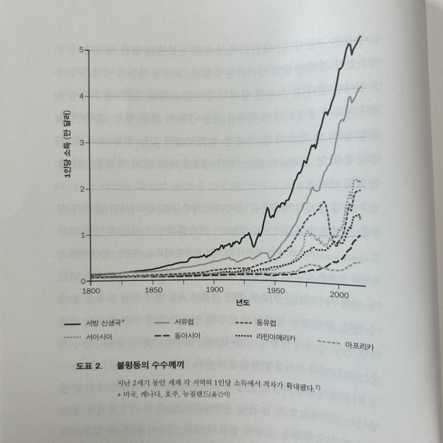
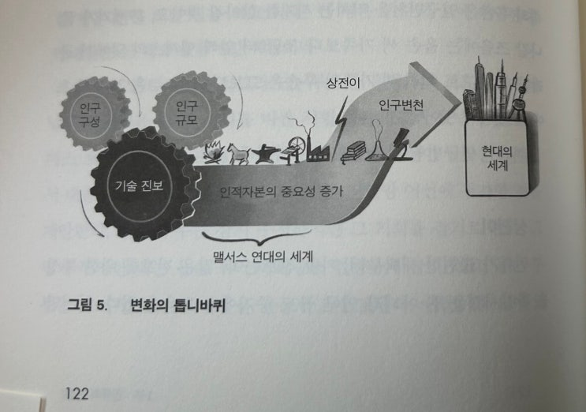
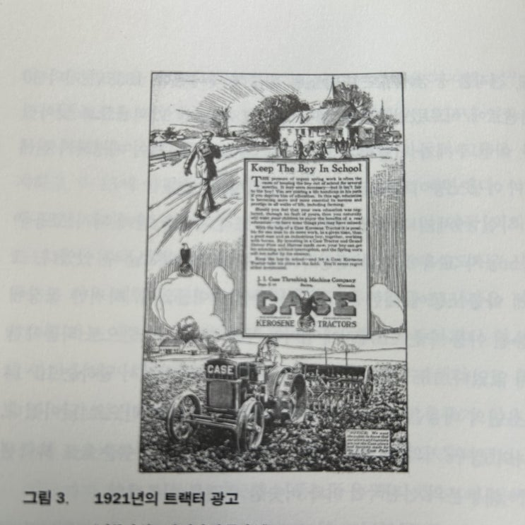

![[서평] 인류의 여정 (오데드 겔로어) 이미지 1](../../assets/images/note-49/p294-01.jpg)
오랜 벗 중에 하나가 추천해주어 읽어본 책 '인류의 여정'
작가인 오데드 겔로어는 '통합 성장 이론'의 창시자(경제학자)로 '통합 성장 이론'이란 한 나라의 부의 수준이 단순히 어떤
산업을 했거나 무역을 했기 때문에가 여러 역사적/문화적/지리적/인종적(유전적) 요인으로 인해서 이루어 졌다고 주장하
는 이론이다.
이 책은 다음과 같은 그래프에서 출발한다.
도대체 왜 최근 2세기 동안 그토록 큰 부의 불평등이 생겨났는가?

이것을 증기기관의 발명으로 인한 산업화의 시작 시점이나 국가들의 군사력으로 설명할 수도 있지만, 그것은 '겉만 핥는
이유' 라고 작가는 설명한다. 중요한 것은 그럼 왜 산업화가 시작되었고 그 조건은 무엇이며 그 조건들은 또 왜 일어났는가
라는 Why의 Why를 파고들어가는 문제를 보아야 한다는게 작가의 중심 생각이다.
그러다 보니... 이 이야기는 아프리카에서 수렵 생활을 하던 인류의 이야기로부터 시작한다 (겔로어 형님 너무 멀리 가신거
아닙니까...먼산....)

겔로어 형님, 아니 작가님은 아프리카 때 수렵 생활에서 어느날 혁신적인 농업기술이 생겨났고 이후 산업화 전 까지 인류
는 이른바 '멜서스 트랩'에 갇혀서 살다가 멜서스 트랩을 탈출하고 산업 혁명을 일으키면서 지금의 인류가 되었다고 주장
한다.
멜서스 트랩이란 생산량의 증가가 가져오는 반복적인 비극의 사이클이다. 예를들면 아래와 같다.
어느날 농업 혁신이 일어나서 더 많은 인구를 부양할 수 있게 되었다. 그래서 한동안 사람들은 잘먹고 잘 살게 되고 (대부
분의 잉여 열량을 자식 생산과 유지에 활용한 결과
19금인가?
) 몇 세대 지나지 않아 사회의 전체 인구는 결국 그 사회가
감당할 수 있는 수치를 넘어서고 다시 사람들은 열악한 상황에 빠진다는 메커니즘이다.
이 멜서스 트렙은 마치 지구의 중력처럼 너무나도 강해서 그동안 강대한 국가가 여러번 있긴 했지만 지금과 같이 인구를
충분히 먹이고도 남는 사회를 구성하진 못했다. 우리 현대 사회의 특징이 바로 다 소모하지도 못할 만큼의 풍요로움인데,
인류 역사상 이처럼 풍요로운 적은 없었다.
그렇다면 우리 인류가 어떻게 멜서스 트랩을 탈출하고 마치 지구 탈출 속도에 이른 로켓 처럼 지구 중력권을 벗어나 우주
로 휘우우웅~ 하고 날라갔는지 설명하기 시작하는데 (책 반권에 걸쳐서) 그 결론을 한 마디로 설명하면 아래와 같다.
교육, 그리고 의도된 저출산
아니 어째 보니까 한국 같은데?
농업 사회에서 가족의 숫자는 곧 노동력의 크기.
그래서 '보통' 사람들은 잉여 수확을 통해 남은 열량이 있으면 그것을 자식을 생산하고 가족을 유지하는데 활용했다. 그것
이 당시 '보통' 사람들에게는 최적 전략이었다 (높은 아이들의 사망률도 이에 한 몫 했다)
당장 지금 살아계신 50대 60대 어른들 육남매 칠남매 말씀하시는거 흔한 일 아닌가? 그 당시엔 그게 당연한 일이었다.
(한국은 일본에 의한 식민지화를 거치기 전 1900년대 초 까지만 해도 전형적인 농업 사회였음을 잊지 말자).
하지만 산업 사회가 시작되고, 빠르게 기술이 발달하고 일의 속성이 자주 변화하는 공장 일이 늘어나면서, 평생 밭만 갈면
되는 단순 노동자 보다는 기본적인 글을 읽고 쓸 줄 알아서 언제든지 새로운 공장에 투입될 수 있는 인력이 필요하게 되었
고 이들이 더 높은 수입을 올리기 시작하였다.
그로인해 사람들은 남은 열량을 더 많은 자식을 생산하기 보다는 있는 자식들의 '교육수준'을 올리는데 집중하기 시작하였
고 이러한 교육과 의도된 저출산으로 인해 사회의 인적 자본 수준이 극적으로 향상되었다. (그림에서 말하는 상전이)

“아들이 학교에 있게 해 주세요"
당신의 아들은 흔히 봄철에 급히 해야 할 일에 떠밀려 몇 달간 학교 밖에서 머물러야 합니다. 필요한 일로 보일
수도 있습니다. 하지만 아동에게는 부당한 일입니다! 당신이 아들에게서 교육 기회를 빼앗는다면 그에게 평생
안고 가야 할 불이익을 던져 주는 것입니다. 그 나이에 받는 교육은 농업을 포함해 모든 직업에서 성공하고 신망
을 얻는 데 필수가 됐습니다.
케이스 등유 트랙터Case Kerosene Tinctor의 도움을 받으시면 한 사람만으로도 건장한 어른과 부지런한 소년
이 말 여러 필과 함께 일하는 것보다 더 많은 일을 할 수 있습니다. 지금 케이스 트랙터와 그랜드 디투어 쟁기 및
써레Grmund Dctour Plow and Harow 한 벌에 투자하시면, 당신의 아들은 중단 없는 교육을 받을 수 있고,
아들이 없어도 봄철 농사에 지장이 없습니다. 아들이 학교에 있게 해 주세요.
케이스 등유 트랙터가 아들의 자리를 대신하게 하세요. 어느 쪽의 투자에서도 당신은 절대 후회하지 않을 것입
니다.
위 광고 영어 내용
이렇게 향상된 인적 자본들은, 더 많은 사회 생산력을 만들어 내고 이러한 사회 생산력이 더 인적 자본을 향상시키는 선 순
환이 일어나 이윽고 굶어 죽을 걱정은 안하는 잉여가 남아 도는 현대 사회를 만들어 낸다.
지구 중력과 같았던 멜서스 트랩을 벗어나 가만히 있어서 날아가기 시작하는 영원한 성장의 시기에 도달한 것이다.
이렇게 인류가 어떻게 멜서스 트랩을 벗어났는지가 책의 전반부 이고, 책의 후반부는 이러한 멜서스 트랩을 벗어나게 하는
요소들에 대해서 하나하나 살펴보는 것이 이 책의 후반부 내용이다 (후반부는 조금 지겹다).
사실, 아동노동은 인류사 내내 본래부터 존재하던 요소였다. 생존을 유지하려면 아동 역시 집안일이든 농사든
등이 부러질 만큼 심 하게 일해야 했다. 물론 산업혁명이 일어났을 때 이 관행이 전례 없는 수준으로 널리 확산
된 것은 사실이다. 도시의 가구 소득은 생존 유지 수준을 간신히 넘었고,
네 살밖에 안 된 아동도 산업 부문에서
일
하고 광산에 보내졌다. 특히 아동노동은 섬세한 손으로 기계의 장애물을 제거하는 게 유리했던 섬유 공장에서
널리 행해졌다.
이 기간 에 아동이 혹사당하면서 겪었던 비참하고 위험한 작업 조건은 교육 의 기회를 빼앗으면
서 빈곤의 악순환을 강화
했다.
하지만
산업화 과정에서 기술이 급속히 변화하면서, 교육받은 노동에 대한 수요가 늘어남에 따라 산업가뿐만 아
니라 부모에게도 아동노동의
수익성이 점차 줄어들었다
.
먼저, 새로운 기계가 아동이 하던 비교적 단순한 작업
을 자동화하면서 아동노동의 생산성이 상대적으로 감소했다. 따라서 부모와 자녀 간 소득 창출 능력의 격차가
커지고, 부모가 아동노동을 통해 얻는 이득은 줄어들었다. 또한 생산공정에서 인적자분의 중요성이 커짐에 따
라,부모는 자녀가 일보다 공부에 집중하도록 투자하고 교육된 인력을 절실히 바라는 산업가 역시 아동노동을 제
한하다 결국 금지하게 되는 입법을 지지했다.
p101-102
사피앤스 같은 혼신의 구라도 아니고 (물론 좋은 책이다), 총/균/쇠 같은 가정의 가정의 가정과 같은 이걸 과학이라고 봐야
하나 싶은 책도 아니고 (물론 이것도 사람들이 좋은 책이라고 한다) 경제학자로서 본인이 이해하고 연구한 경제적인 이야
기만 담백하게 적어나간 좋은 책이었다.
물론 여기에 다 적지 못한 좋은 이야기가 많이 있으니 관심 있는 사람은 알아서 보시길. ㅎㅎㅎ
그래서 돈 주고 살만 하냐구요?
소장 가치 :
10점 만점에 7점 드립니다!